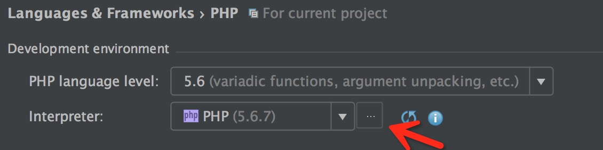
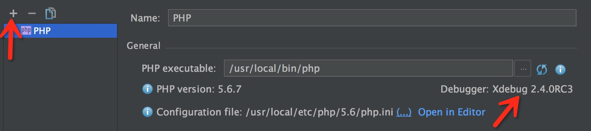
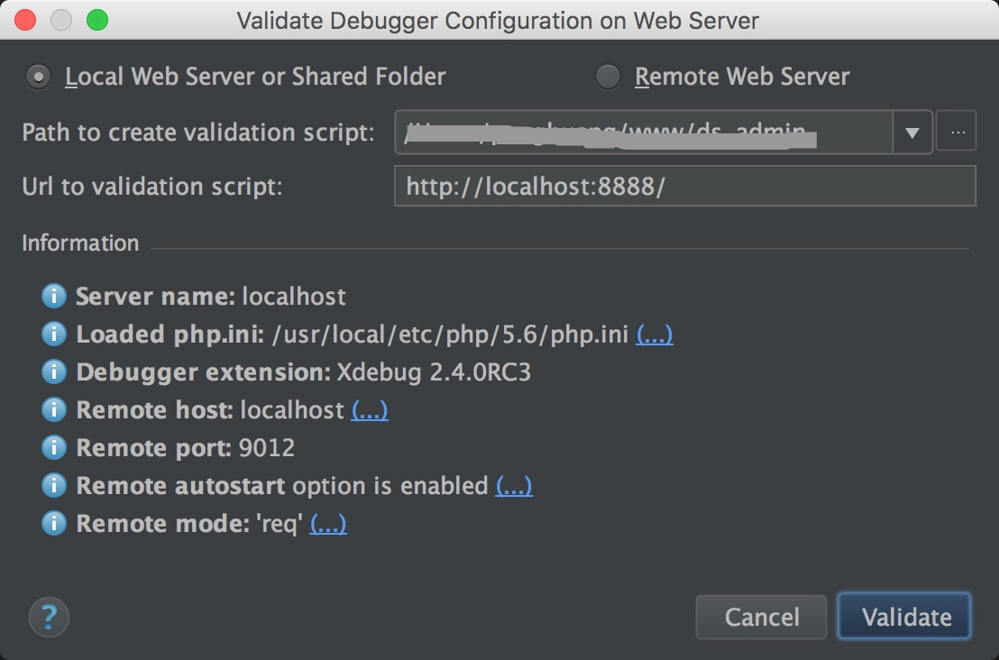
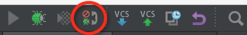
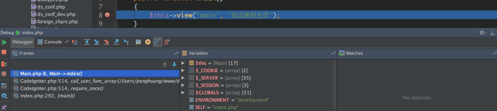

使用PhpStorm+xdebug远程调试php
软件配置
| 软件 | 版本 |
|---|---|
| mac os | 10.11.2 |
| nginx | 1.6.3 |
| php-fpm | |
| xdebug | 2.4.0rc3 |
| php | 5.6.7 |
安装xdebug
- 从xdebug官网下载xdebug的源码
- 解压
tar -xvzf xdebug-2.4.0rc3.tgz cd xdebug-2.4.0RC3./configuremakecp module/xdebug.so <any/path/you/want>
加载xdebug
修改php.ini文件，新增以下配置后重启php-fpm
|
|
PhpStorm设置
到
Preferences->Languages & Framworks->PHP中配置解释器，如果没有先添加一个，xdebug正确加载会显示在右下角，否则说明xdebug没有正确配置

- 到
Preferences->Languages & Framworks->PHP->Debug中配置xdebug的监听端口，需要同xdebug.remote_port设置的一致 使用
Run->Web Server Debug Validation检查debug的配置
最后打开监听，添加断点就可以调试了

